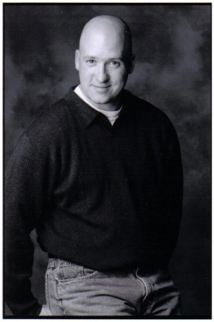

#11532 Breakthrough - Zurück ins Leben
Alternativ: Breakthrough (Englischer Titel)

 IMDB-Wertung: 5.8 / 10
IMDB-Wertung: 5.8 / 10  Tomatometer: 59
Tomatometer: 59  Metascore: 46
Metascore: 46 
"Breakthrough - Zurück ins Leben" basiert auf einer unglaublichen wahren Geschichte und erzählt von der tiefen unendlichen Liebe einer Mutter zu ihrem Kind im Angesicht großer Hoffnungslosigkeit. Als John, der Adoptivsohn von Joyce Smith, auf dem Missouri Lake ins Eis einbricht, scheint alles verloren. Doch, obwohl John leblos darliegt, weigert sich Joyce, ihn aufzugeben.
Jahr: 2019
Dauer: 116 Minuten
FSK: 12
Land: USA Studio: Twentieth Century FoxTonspuren: DD5.1 - ,
Untertitel: Deutsch,
Auflösung: 1080p (1920x808) Größe: 9482 MB
Genre: Drama, Biographie
Regisseur:  Roxann Dawson
Roxann Dawson
Drehbuch: Grant Nieporte, Joyce Smith
Soundtrack: Marcelo Zarvos
Darsteller:
 Topher Grace als Pastor Jason Noble
Topher Grace als Pastor Jason Noble Dennis Haysbert als Doctor Garrett
Dennis Haysbert als Doctor Garrett- Chrissy Metz als Joyce Smith
 Josh Lucas als Brian Smith
Josh Lucas als Brian Smith Mike Colter als Tommy Shine
Mike Colter als Tommy Shine- Rebecca Staab als Cindy Reiger
- Marcel Ruiz als John Smith
 Sam Trammell als Dr. Kent Sutterer
Sam Trammell als Dr. Kent Sutterer- Victor Zinck Jr. als Joe Morrow
- Lisa Durupt als Paula Noble
- Ali Skovbye als Emma
- Stephanie Czajkowski als Melissa
- Isaac Kragten als Josh
- Maddy Martin als Abby Sutterer
 Kristen Harris als Kay Quinn
Kristen Harris als Kay Quinn- Taylor Mosby als Chayla
 Chuck Shamata als Fire Chief
Chuck Shamata als Fire Chief Nancy Sorel als Mrs. Abbott
Nancy Sorel als Mrs. Abbott- Nikolas Dukic als Reiger
- Lecrae als Rapper
- Stephanie Sy als ER Receptionist
- Beverly Ndukwu als Trauma Nurse
- Scott Johnson als Keith
- Callie Lane als Daughter
- Logan Creran als Luke Noble
- Annelise Pollmann als Olivia Noble
- Lauren Cochrane als Nurse Wendy Hof
- Kate Yacula als Assistant Maddy
- Travis Bryant als Jonah
 Alicia Johnston als Mrs. Sutterer
Alicia Johnston als Mrs. Sutterer- Miriam Smith als VP Nancy Benes
- Jason Wishnowski als Cop #1
- Jordan Kronis als Chad
-  Will Woytowich als Cop #2
- William Whyte als Church Congregation, Well Wisher
- Robin Ruel als Neurologist
- Geoff Banjavich als Pulmonologist
- Onalee Ames als Mother 1
- Karl Thordarson als Don
- Kevin P. Gabel als Male Nurse
- Saul Elias als John Smith
- Erik Athavale als Dr. Lulu
- Jay Koensgen als Recruit
- Elena Anciro als Trauma Nurse #2
- Tristan Mackid als Punk
- Mel Marginet als Trauma Nurse #1
- Veronica Ternopolski als Paramedic #2
- Isla Gorton als Daughter #2
- Cindy Myskiw als Cheering Crowd / Church Member (uncredited)
- Steve Pacaud als Church Preacher (uncredited)
Datei: X:\2019(A-F)\Breakthrough - Zurück ins Leben (2019, FSK12, 1920x808).mkv seit 22.07.2019
Festplatte: HD 2018(G-Z)-2019(A-Z)
 Es gibt insgesamt 60 Filme in der Gruppe '2019(A-F)'
Es gibt insgesamt 60 Filme in der Gruppe '2019(A-F)'